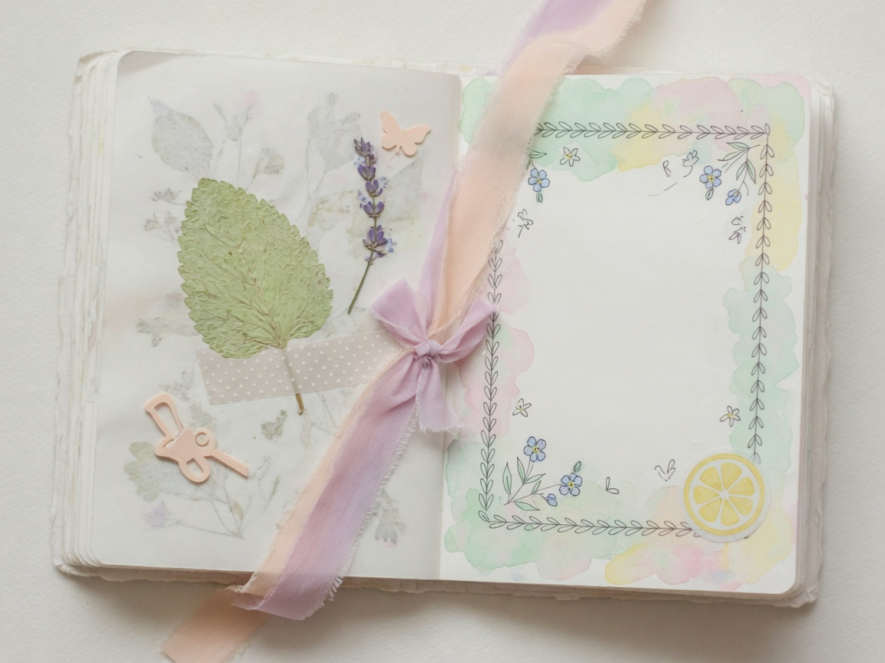
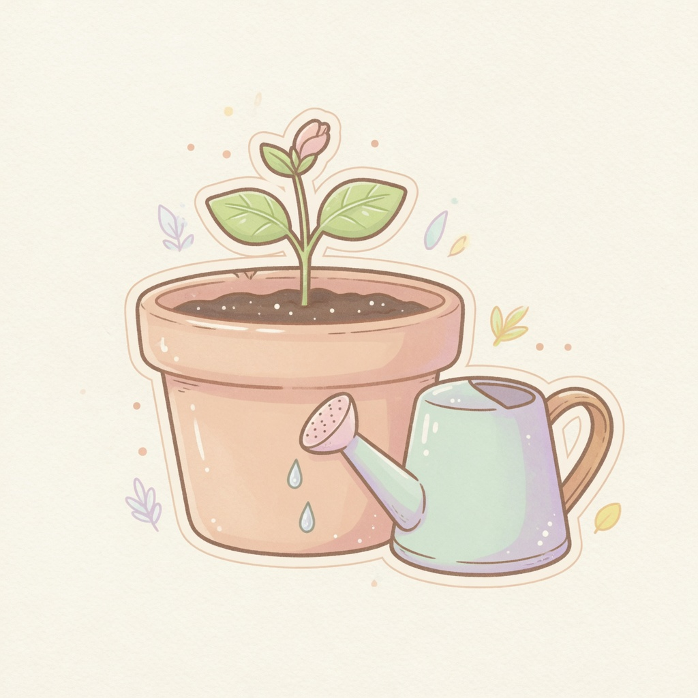
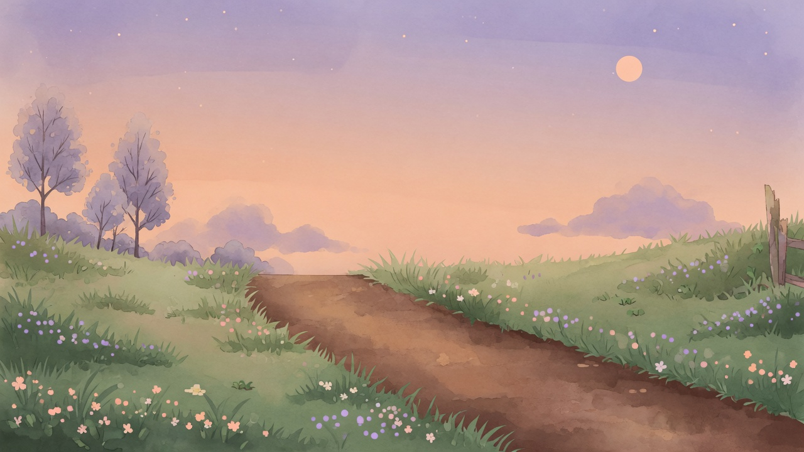
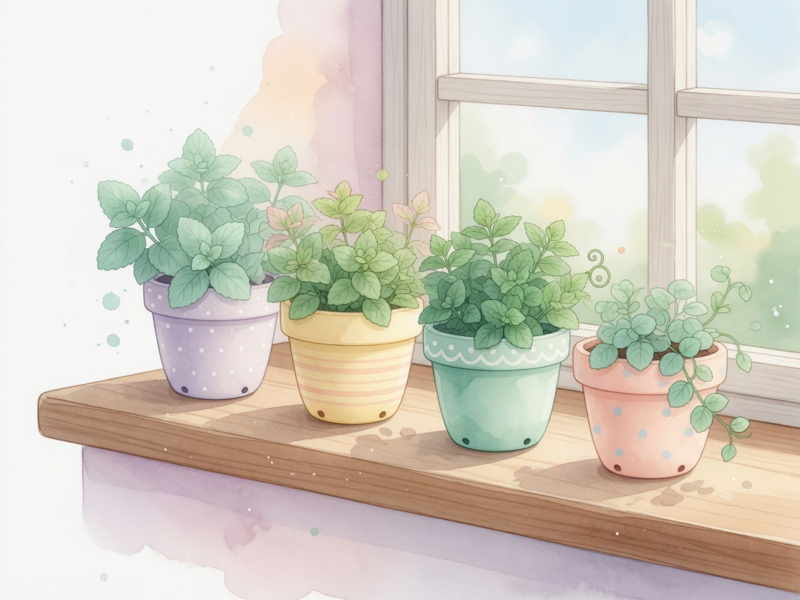
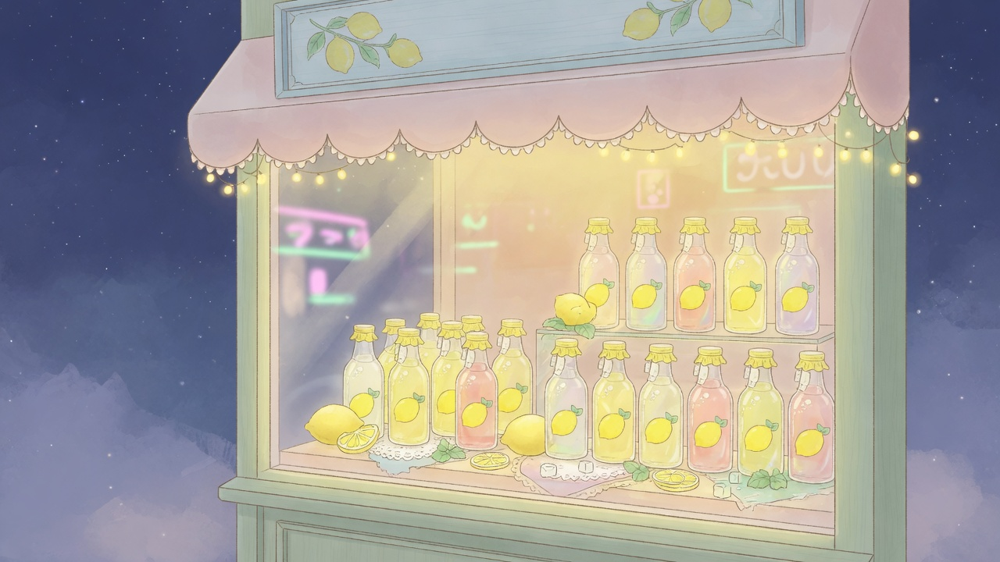
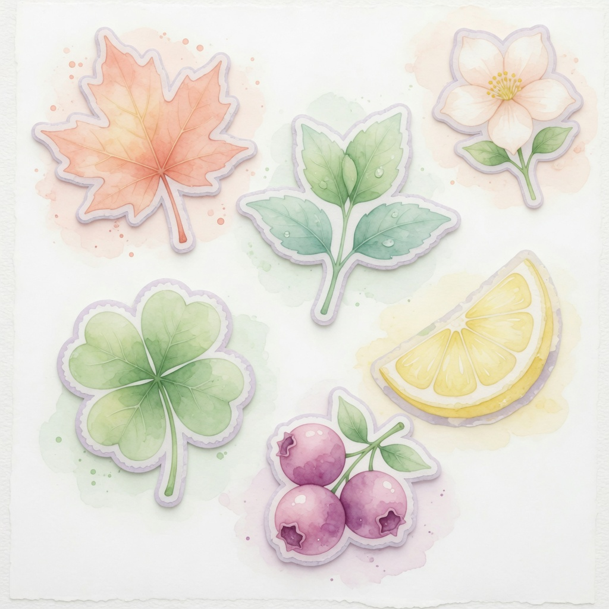

用浏览器打开本页即可（支持 file://）。数字键 1–4 可快速进入小路 / 盆栽 / 汽水铺 / 图鉴。

🌳
🌲
今天的晚风很温柔
沿着小路散步收集灵感，在窗台照料小植物，再为路过的人调制一杯汽水吧。
今日手帐
慢慢写下的小日子
温柔成就
没有排名，只有纪念
小竹篮
拾到的东西都在这里今日小目标
做不到也没关系，明天又是新的晚风温柔信箱
没有垃圾邮件，只有路过的心意温柔足迹
只是记录，不是排行榜怎么玩
没有战斗，慢慢来就好用屏幕左右按钮或键盘方向键 / A D 走动。靠近发光的小东西会自动拾取。上方可切换小路主题（影响天空与拾取倾向）。点「再走一段新路」会遇到晚间小事件；「长椅歇脚」可安静地坐一会儿。
选空花盆 → 种植 → 浇水 / 用水壶 / 日照 / 说说话 / 歇一歇。成熟后收获。可取小名、写便签、窗台速写；同盆多次收获有熟土记忆。散步蓄水壶。汽水铺可记常客与「老样子」复刻。
按客人喜好选择杯型、基底、风味与装饰，再端给客人。没有倒计时，做错了也可以换下一位。图鉴里可查看秘密配方是否解锁。
今日小目标：温和日课，未完成无惩罚。演示模式：一键载入展示存档。设置：音效、减少动效、存档导入导出。
更完整的文字说明见项目文档 docs/USER_MANUAL.md。
设置
按你喜欢的节奏来晚风小路
轻点左右或用方向键走走看
窗台盆栽
点选花盆，温柔地照顾它们
青柠汽水铺
没有倒计时，慢慢做就好
🙂
一位路过的客人
想喝点清爽的……
今日展示架
今日小特调：—
小费罐：0 / 10
端出的汽水会在这里留个影子。
① 杯型
② 基底
③ 风味
④ 装饰
未命名汽水
图鉴日记

散步遇见的，都会记在这里